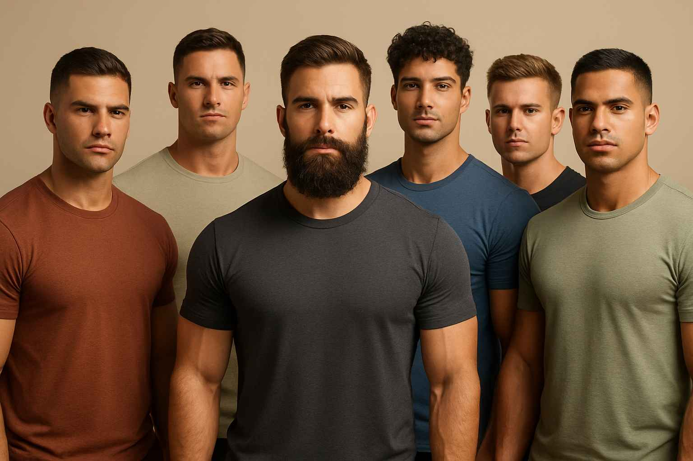

Os cortes de cabelo masculino têm desempenhado um papel significativo na moda e na identidade masculina ao longo dos anos. Desde os antigos estilos clássicos até as tendências modernas, os cortes de cabelo refletem a evolução das preferências culturais e sociais
O Penteado Social Curto é um penteado lateral curto (2-3 cm) com risca, elegante para Brasília ou Lisboa, disfarçando cabelo ralo. É formal, mas menos casual e pode expor o couro cabeludo. Clássico dos anos 1950, é corporativo na lusofonia.
O Corte Americano apresenta topo curto (1-2 cm) com laterais em degradê, criando um visual polido e profissional, ideal para escritórios em São Paulo ou Lisboa. É fácil de manter, mas exige cortes frequentes para manter o degradê nítido. Clássico dos anos 1920, é um favorito corporativo no Brasil e Portugal